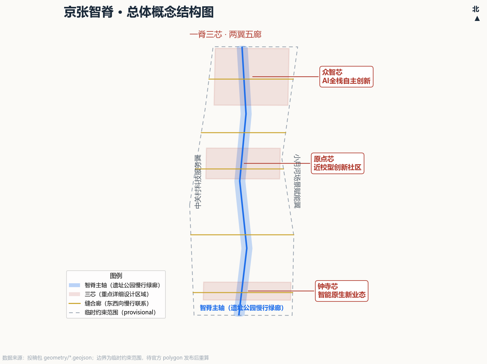
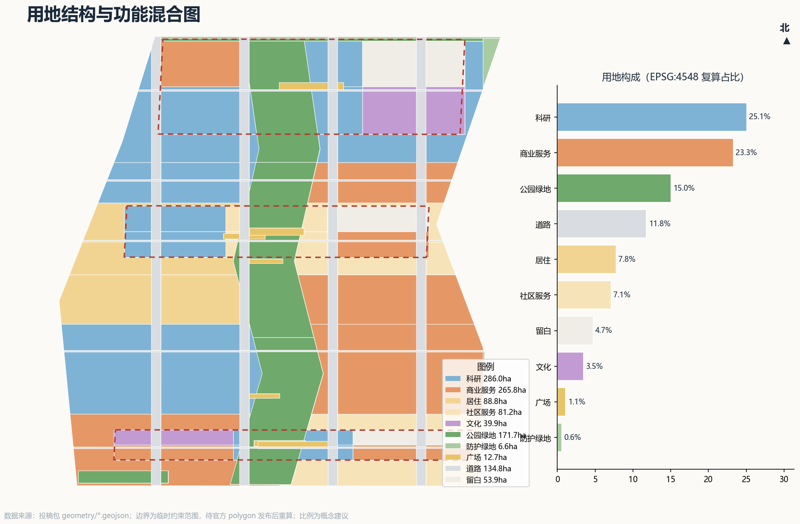
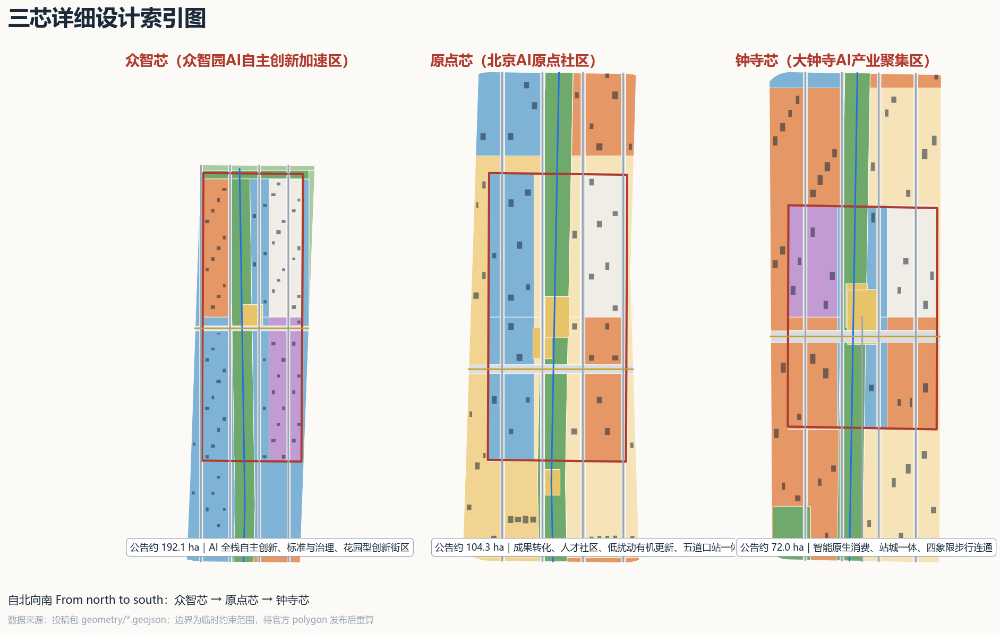
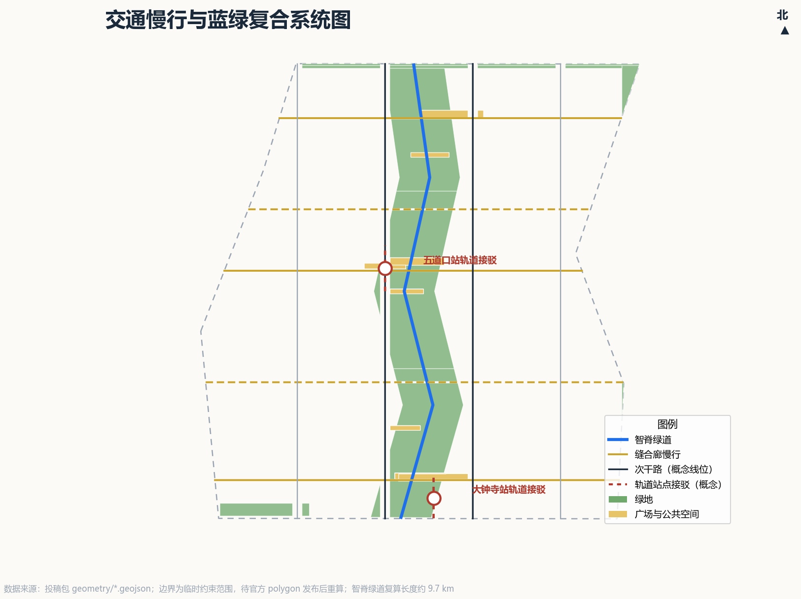
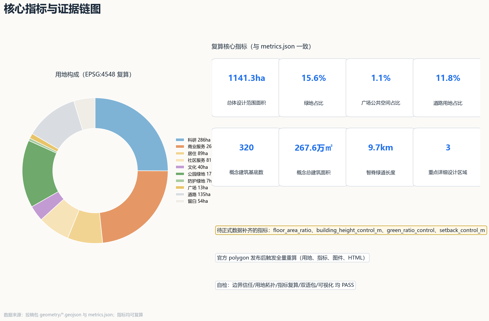

京张智脊：百年京张AI创新带城市设计方案
以京张铁路遗址走廊为“智能脊柱”，串联众智芯、原点芯、钟寺芯三处重点片区，联动中关村科技服务翼与小月河场景赋能翼，构建“一脊三芯、两翼五廊、全网场景”的百年京张AI创新带概念方案。
京张智脊：百年京张AI创新带城市设计方案
设计依据与资料清单
本方案是面向“百年京张AI创新带城市设计国际方案征集”的开放共创概念建议，不替代正式规划，不构成政府审定结论。第一依据是北京市规划和自然资源委员会海淀分局发布的资格预审公告，它确定了项目名称、三层范围、三处重点区、设计任务和成果语境 标准；第二依据是面向全球智能体的开源征集任务书，它确定了三大定位、五大功能、三区两翼、六项智能体任务与统一边界条款 标准。
生成前，我们完整读取了仓库场地包（任务书摘录、设计任务、允许设计空间、枚举、指标范围、模式文件）、公开资料登记表和处理事实包 来源 来源 来源。资料使用边界按登记表执行：公告与任务书是正式任务依据；临时边界仅用于生成、可视化与临时自检；全球案例等公开材料只作背景经验，不支撑任何空间控制结论。
必须向评审者坦诚的核心资料事实是：截至本方案生成，官方精确红线与三处重点区精确 polygon 尚未公开发布，资格预审文件下载需要密码。本方案采用仓库维护者提供的临时约束范围（provisional constraint）作为生成基底 来源 来源，其相对公告面积的偏差在 0.02%–0.43% 之间，但它不是官方红线，不能用于审批、精确面积认定或法定控制。官方 polygon 发布后，用地、指标、图件与展示页将按约定触发全量重算 深度。
控制性详细规划条件（容积率、建筑高度、建筑密度、绿地率、退线）全部缺失，本方案一律写为“待正式数据补齐”，绝不伪装为审定指标；现状建筑、权属、文保控制线、市政管线同理处理。完整的缺口清单与复算触发条件保存在 assumptions.json，正文“风险、版权与合规说明”一章给出人类可读说明。

三层范围工作框架
方案按公告确定的三个层次组织工作，三层之间是“战略—结构—验证”的传导关系，而不是三张孤立的图 深度。
统筹研究范围（约 43.6 平方公里）只作战略研究：回答海淀 AI 产业生态的组织方式、“三区两翼”的协同回路和未来城市形态，不落法定图层。它决定了总体设计范围的结构选择。
总体设计范围（约 11.4 平方公里）是本方案的空间落图层：以提交的 geometry/site_boundary.geojson 中 SITE-001 临时约束范围为界，EPSG:4548 复算面积约 1141.28 公顷，与公告约 11.4 平方公里基本一致 空间数据 指标。在这一层完成用地布局、建筑概念规模、交通慢行、蓝绿公共空间、更新项目与分期，达到控制性详细规划的城市设计深度（控制指标因官方条件缺失而标注为待补齐）。
重点区域范围（约 368.4 公顷）是三处重点片区的详细设计层：众智芯、原点芯、钟寺芯，以 geometry/key_areas.geojson 的 KEY-001/002/003 临时约束范围为工作边界 空间数据，达到规划综合实施方案的城市设计深度，但所有地块级结论均为概念建议。
若临时边界被官方 polygon 替换，需要重算的内容包括：全部用地图层与面积、绿地率与公共空间比例、建筑基底与概念总建筑面积、道路与慢行长度、分期范围，以及全部图件、A3/A0 图纸和 HTML 展示页；不能只替换单个边界文件。这一重算承诺写入自检记录，作为方案的可信度边界。

统筹研究范围产业与未来城市研究
总体概念与命名体系（回应 agent.1）
我们把这条 43.6 平方公里的创新带命名为“京张智脊”（Jing-Zhang AI Spine）。“脊”有三层含义：它是京张铁路留下的物理脊梁，是串联三大产业片区的空间脊梁，也是支撑 AI 全栈自主创新的精神脊梁——1909 年中国人自主修建的第一条干线铁路，与今天自主可控的人工智能全栈体系，在同一走廊上形成百年呼应。命名系统随之展开：一条“智脊主轴”（The Spine）贯穿南北；三处重点区命名“众智芯、原点芯、钟寺芯”；东西两翼为“中关村科技服务翼”和“小月河场景赋能翼”；五条东西向慢行廊道命名“缝合廊”（Stitch Corridors），自北向南为清河智谷廊、众智交流廊、原点书香廊、学院创新廊、钟寺活力廊。整套命名中英双语成体系，可供专业团队深化为正式品牌系统 来源。
Logo 与视觉识别方向（概念建议）：以“铁轨枕木→数据流→神经元突触”的三重意象渐变融合为核心图形，主色为京张铁路历史红（heritage red #B03A2E）与智能蓝（spine blue #1F6FEB），辅以金色（#C9A227）表示荣誉与贡献展示；所有字体、图形均为原创概念方向，不使用任何未授权字体、商标或企业标识。视觉系统可延展到导视、场景卡、活动视觉与展板的完整识别体系。
三大定位、五大功能与协同回路
方案将“百年京张文化带、都市AI生活体验带、AI融合创新带”三大定位转译为空间机制：文化带落在智脊展廊与三芯叙事节点；体验带落在五条缝合廊与 12 张场景卡构成的可感知网络；创新带落在三芯的产业功能混合与两翼的服务支撑 深度。五大功能的承载关系为：AI 全栈自主创新体系与 AI 治理全球话语权主要落在众智芯；世界级 AI 创新生态落在原点芯与两翼；AI+场景赋能新范式与智能化 AI 活力城市落在钟寺芯、小月河翼与全网场景节点。
“三区两翼”协同回路（概念建议）：西翼输出科技服务、资本与知识产权服务到三芯；三芯输出技术成果与场景需求；东翼把场景需求转化为公共体验与测试验证，再回流为数据与口碑资产；智脊承担人流、叙事与品牌的物理连接。这一回路在用地布局中体现为：西翼条带布置科研（0802）为主，东翼条带布置商业服务与场景空间（05）为主，三芯内部保持科研、商业、文化、留白的复合混合 空间数据。
全球 AI 创新生态案例（回应 agent.2，公开背景经验）
以下七个案例来自公开资料，仅作经验参照，不支撑任何空间控制结论；案例的详细来源与使用限制登记在 sources.json 与 assumptions.json（A-CASE-001）。
| 案例 | 可借鉴机制 | 本方案转化 |
|---|---|---|
| 硅谷/斯坦福生态 | 大学策源+风险资本+开源文化的长周期网络 | 原点芯“校区-园区-街区”融合与开源社区组团 |
| 肯德尔广场（MIT） | 校企共生、实验室到企业的最短路径 | 科技成果转化区与孵化加速组团的空间邻接 |
| 多伦多 MaRS+Vector | 医工交叉、城市级测试场景开放 | AI+医疗导航场景卡与小月河翼场景开放机制 |
| 伦敦国王十字知识区 | 遗产建筑更新承载知识产业 | 京张遗址廊道与清华园车站旧址的文化再利用 |
| 特拉维夫初创生态 | 高密度初创与国际化人才社区 | 人才公寓、国际社群活动与开发者社区运营 |
| 新加坡纬壹/榜鹅数字区 | 政府主导的场景沙盒与数字孪生测试 | 三个产业测试验证场景（TVS）的沙盒机制 |
| 蒙特利尔 Mila | 研究机构品牌带动城市 AI 认同 | AI 朝圣地标与“开源星光墙”荣誉体系 |
未来城市形态判断：AI 时代的城区不是“更多屏幕的城市”，而是“服务可被智能体重组、空间可被场景预约、治理可被公众校验”的城市。本方案据此提出“场景注册制”的空间运营概念：公共空间、测试走廊与展示节点都登记为可预约、可审计、可退出的场景资源，人工复核是默认前置条件 来源。
总体设计范围城市更新与控规深度城市设计
总体设计范围的空间结构概括为“一脊三芯、两翼五廊、全网场景” 深度：
- 一脊：智脊主轴——沿京张遗址廊道的南北向公园慢行绿脊，复算长度约 9.67 公里 指标，分为钟寺段、原点段、众智段三个主题公园段，是慢行、文化展示与 AI 场景体验的复合廊道。
- 三芯：众智芯、原点芯、钟寺芯，承担产业主力功能，内部按“科研+商业+文化+留白”复合组织。
- 两翼：西翼以科研与科技服务组团承接中关村溢出的服务职能；东翼以商业服务与场景空间承接小月河沿线的公共体验职能。
- 五廊：五条东西向缝合廊把被铁路与快速路割裂的东西两侧重新缝合并接入智脊。
- 全网场景：广场、驿站、站前节点构成场景节点网络，与 12 张场景卡一一对应。
用地结构（概念建议，EPSG:4548 复算）：科研用地约 286.0 公顷（25.1%）、商业服务约 265.8 公顷（23.3%）、居住与社区服务约 170.0 公顷（14.9%）、绿地约 178.3 公顷（15.6%）、道路约 134.8 公顷（11.8%）、广场约 12.7 公顷（1.1%）、文化约 39.9 公顷（3.5%）、战略留白约 53.9 公顷（4.7%）指标 指标 指标。这一结构的设计含义是：以科研与商业服务为主体承载 AI 产业，以连续绿地与廊道支撑人才日常生活，以留白应对产业快速迭代的不确定性。居住比例偏低是有意的概念选择——本范围是产业走廊而非居住新城，居住以人才社区和存量社区更新为主，具体平衡有待正式人口与住房数据验证。
城市更新总体框架（概念建议）：以“留改拆”梯度更新为主、大拆大建为戒——保留并改造沿智脊的工业与铁路遗存空间为文化与展示功能；更新低效产业园区为 AI 研发与孵化空间；在五道口、大钟寺等站点周边做站城一体化功能织补。建筑层面，方案生成了 320 栋概念建筑基底用于规模推演，其中新建约 45%、改造约 35%、保留约 15%、建议拆除约 5%（仅为概念配比，待现状建筑与权属数据补齐后逐栋复核）指标 深度。
开发强度说明：官方容积率、建筑高度、建筑密度、绿地率、退线等控制条件全部缺失，本方案不给出任何法定强度结论；概念总建筑面积约 267.6 万平方米仅用于空间供给量级的讨论，由概念基底与概念层数推算，供专业团队在正式控规条件下深化校核 指标。
京张遗址公园活力带：方案把公园从“一条绿化带”升级为“创新带的公共客厅”——三个公园段分别植入展示（南段·智能原生消费展示）、交流（中段·五道口学术与开发者交流）、试验（北段·清河绿色技术试验）的职能；南北贯通的绿道解决遗址廊道的慢行断点，五条缝合廊解决东西连通；南北两端与跨环路节点预留标志性城市景观节点的概念位置。上述节点均为概念建议，不涉及桥隧工程可行性结论 深度。
城市风貌基调：以“遗产红×智能蓝”为色彩基调，遗址段保持工业遗存的材质真实性，三芯新建区以中等高度、人性尺度、屋顶第五立面统一为概念引导方向；具体高度、体量、色彩分区待正式控规与城市设计导则数据补齐后确定 标准。
重点区域详细设计
三处重点区以 geometry/key_areas.geojson 的 KEY-001/002/003 临时约束范围为工作边界，公告面积约 192.1 / 104.3 / 72.0 公顷，临时 polygon 复算值约 192.9 / 104.3 / 72.0 公顷，偏差在 0.43% 以内 指标。所有片区级结论均为概念建议，待官方重点区 polygon 发布后重新校核 深度。
众智芯（众智园AI自主创新加速区，KEY-001）：定位“国家级 AI 全栈自主创新与治理试验场”。空间上以中心广场（众智芯中心广场）为礼仪性核心，组团按“AI 全栈研发区—标准与治理实验区—孵化加速组团—创新服务商业—清河文化展示—战略留白”复合组织 空间数据。概念用地构成（基于临时约束范围复算，约 192.9 公顷）：
| 功能 | 面积 | 占比 |
|---|---|---|
| 科研（0802） | 50.2 ha | 26.0% |
| 公园绿地（1401） | 37.5 ha | 19.5% |
| 留白（16） | 28.0 ha | 14.5% |
| 文化（0803） | 27.5 ha | 14.3% |
| 商业服务（05） | 23.9 ha | 12.4% |
| 道路（1207） | 22.0 ha | 11.4% |
| 广场（1403） | 3.8 ha | 2.0% |
设计动作：沿清河一侧布置文化展示与滨水交往空间，呼应清河文化挖掘；临智脊一侧布置孵化组团，最短路径接入慢行主轴；约 14.5% 的战略留白是有意的弹性储备——AI 全栈技术与国家级平台需求迭代极快，留白为不确定性预留空间，待平台需求明确后再激活，避免被短期开发锁死。风险：五环路一体化交通优化仅作方向建议，不做工程结论。
原点芯（北京AI原点社区，KEY-002）：定位“近校型成果转化与人才社区”。围绕五道口、清华东路西口轨道站点做一体化概念设计，组团按“科技成果转化区—开源社区组团—人才社区服务—校区融合服务—五道口活力商业—有机更新留白”组织 空间数据。概念用地构成（约 104.3 公顷）：
| 功能 | 面积 | 占比 |
|---|---|---|
| 科研（0802） | 30.2 ha | 29.0% |
| 道路（1207） | 16.2 ha | 15.5% |
| 公园绿地（1401） | 14.8 ha | 14.1% |
| 留白（16） | 14.0 ha | 13.5% |
| 商业服务（05） | 13.1 ha | 12.5% |
| 社区服务（0702） | 12.3 ha | 11.8% |
| 广场（1403） | 3.7 ha | 3.6% |
设计动作：站点前广场作为“学术会客厅”；校区与园区之间以原点书香廊缝合；更新模式坚持低扰动、渐进式，避免对存量社区的大规模拆改。留白用于人才社区与校区的弹性缓冲，随成果转化节奏逐步填充。风险：校区边界与权属复杂，实施模式需与高校、属地多主体共商。
钟寺芯（大钟寺AI产业聚集区，KEY-003）：定位“城市型智能原生经济培育区”。围绕大钟寺站做站城一体概念设计，组团按“智能原生消费区—智能体产业办公—站城一体商业—数字文化体验—内容科技企业区—更新储备留白”组织 空间数据。概念用地构成（约 72.0 公顷）：
| 功能 | 面积 | 占比 |
|---|---|---|
| 商业服务（05） | 19.6 ha | 27.3% |
| 道路（1207） | 11.3 ha | 15.6% |
| 文化（0803） | 11.1 ha | 15.4% |
| 留白（16） | 11.0 ha | 15.2% |
| 公园绿地（1401） | 8.1 ha | 11.2% |
| 科研（0802） | 7.9 ha | 11.0% |
| 广场（1403） | 3.1 ha | 4.4% |
| 社区服务（0702） | 0.0 ha | 0.0% |
设计动作：大钟寺站所在路口四象限的步行连通以“四象限广场+对角慢行动线”概念解决；重点企业周边公共环境品质提升以街道家具、立面激活与场景节点植入为主；规划绿地复合利用为可预约的场景试验场。留白用于智能原生新业态的迭代试错空间。本芯社区服务用地为 0% 是有意取舍——作为城市型纯产业街区，人才日常服务由原点芯与周边存量社区承载，本芯聚焦商业、文化与研发功能，避免功能泛化稀释产业浓度。风险：站点改造与权属边界需专业团队深化。

AI 创新生态、人才画像与 AI+ 场景
用户画像（六类）
| 画像 | 核心需求 | 方案回应 |
|---|---|---|
| P1 AI 研究员/科学家 | 安静深度工作、跨机构协作、国际交流 | 众智芯研发组团、智脊学术交流节点 |
| P2 初创团队/开发者 | 低成本空间、算力与数据服务、社群 | 孵化加速组团、企业服务 Copilot、开发者社区 |
| P3 高校学生 | 实习实践、开放课堂、青年社交 | 原点芯校区融合服务、青年友好公共空间 |
| P4 周边居民（含老年） | 日常服务、绿色休闲、不被技术排斥 | 社区服务组团、适老人工服务窗口、口袋公园 |
| P5 国际访客/AI 朝圣者 | 可识别的地标、导览、活动 | 三大 AI 朝圣地标、AI 导览场景、双语导视 |
| P6 城市运营与治理人员 | 场景可审计、风险可复核 | 场景注册制、公共安全运营复核场景 |
AI 场景卡（12 张，★为产业测试验证场景）
每张场景卡按「可开始、可停止、可复核」的可落地结构编写：落点锚定到投稿包几何要素，并给出运营主体、开始条件（准备度卡）、最小可用基线、停止条件、人工兜底与复盘证据。所有基线均为供专业团队深化的概念设计值，不代表已获试点授权或已完成现场验证 来源。
★TVS-1 智脊低速机器人配送测试走廊｜落点：智脊绿道全线 空间数据
- 服务对象：机器人企业、园区用户。数据边界：公开道路资料与授权测试数据，不采集人脸。
- 运营主体：场景注册平台运营方（概念建议）。
- 开始条件：测试段权属与安全评估完成、方案公示期满、保险与应急预案备案。
- 最小可用基线：单段约 500 m、不超过 2 台低速设备、限速不超过 15 km/h、连续 30 天无伤人事件。
- 停止条件：发生人身伤害、公众投诉超阈值或感知数据异常，立即停线复检。
- 人工兜底：远程安全员一键急停，现场巡护限时到场。
- 复盘证据：运行日志、事件记录与月度公开摘要。
★TVS-2 AI+交通慢行评估与信号优化沙盒｜落点：五条缝合廊与站点接驳 空间数据
- 服务对象：通勤者、交通研究者。数据边界：公开流量数据与匿名化计数。
- 运营主体：交通研究团队与属地交通部门协同（概念建议）。
- 开始条件：评估指标与采集方案经交通、规划专业人员审定；只做评估不直接控制信号。
- 最小可用基线：单条缝合廊、一个完整信号周期工作日、 anonymized 样本量满足统计显著性。
- 停止条件：评估建议未经人工复核不得落地；任何建议引发安全质疑即中止。
- 人工兜底：信号配时最终由交通工程师人工确认。
- 复盘证据：评估报告、前后对比数据与复核签署记录。
★TVS-3 大钟寺智能原生商业 A/B 试验场｜落点：钟寺芯智能原生消费区 空间数据
- 服务对象：商户、消费者。数据边界：交易数据脱敏、明示授权、可随时退出。
- 运营主体：商户联盟与场景注册平台（概念建议）。
- 开始条件：商户自愿签约、消费者权益人工兜底机制就位、试验规则公示。
- 最小可用基线：不超过 10 家商户、单组试验不超过 4 周、设定对照组。
- 停止条件：出现价格歧视、误导性推荐或投诉集中即停止该组试验。
- 人工兜底：消费者人工客服与无理由退出通道。
- 复盘证据：试验设计书、脱敏结果数据集与商户复盘纪要。
SC-04 AI 导览与文化叙事｜落点：智脊展廊、清华园车站旧址 空间数据
- 服务对象：游客、学生。数据边界：公开历史资料与人工策展文本。
- 运营主体：文化运营团队（概念建议）。
- 开始条件：导览内容经文化、版权、史实三重人工复核。
- 最小可用基线：单个展廊段落、双语版本、事实核查记录留档。
- 停止条件：发现史实错误或版权异议即下线修订。
- 人工兜底：策展人终审，公众纠错通道。
- 复盘证据：内容版本记录与核查签署。
SC-05 AI+医疗健康服务导航｜落点：社区服务组团 空间数据
- 服务对象：居民、园区青年。数据边界：只用公开服务目录，不碰个人健康数据。
- 运营主体：社区服务运营方（概念建议）。
- 开始条件：服务内容经医疗与法律专业复核，明确「仅导航、不诊断」。
- 最小可用基线：单个社区节点、公开目录覆盖率与准确率人工抽检。
- 停止条件：出现越界建议或信息过期未更新即暂停。
- 人工兜底：人工服务窗口并行保留。
- 复盘证据：抽检记录与更新日志。
SC-06 企业服务 Copilot｜落点：两翼科技服务节点 空间数据
- 服务对象：企业与开发者。数据边界：公开政策与服务目录。
- 运营主体：科技服务运营团队（概念建议）。
- 开始条件：政策解读免责声明与人工咨询入口就位。
- 最小可用基线：单个服务节点、问答准确率人工抽检达标。
- 停止条件：政策解释被证实误导即修正并公示。
- 人工兜底：专业人工咨询通道。
- 复盘证据：问答抽检记录与纠错日志。
SC-07 公共安全与活动运营复核｜落点：大型活动与夜间场景节点 空间数据
- 服务对象：运营团队、公众。数据边界：人流热力匿名化。
- 运营主体：活动运营与安全团队（概念建议）。
- 开始条件：安全预案经人工审定，AI 只做提示不做处置决定。
- 最小可用基线：单场活动、提示准确率与误报率人工评估。
- 停止条件：误报率过高或漏报关键风险即退回纯人工模式。
- 人工兜底：安全结论必须人工确认。
- 复盘证据：活动复盘报告与处置记录。
SC-08 AI+教育：校区-园区开放课堂｜落点：原点芯校区融合服务组团 空间数据
- 服务对象：学生、公众。数据边界：公开课程资源。
- 运营主体：高校与园区共建团队（概念建议）。
- 开始条件：课程内容经教育机构审核。
- 最小可用基线：单门试点课程、学习反馈问卷。
- 停止条件：内容质量投诉成立即下架修订。
- 人工兜底：授课教师全程负责。
- 复盘证据：课程评估与反馈汇总。
SC-09 AI+法律：知识产权快速服务驿站｜落点：西翼科技服务组团 空间数据
- 服务对象：初创团队。数据边界：公开法规与案例库。
- 运营主体：知识产权服务机构（概念建议）。
- 开始条件：明确「初步导航、非正式法律意见」标识。
- 最小可用基线：单个驿站、导航准确率人工抽检。
- 停止条件：导航结果被证实误导即暂停修订。
- 人工兜底：律师人工出具正式意见。
- 复盘证据：服务记录与抽检报告。
SC-10 AI+生活服务：人才社区一站式助理｜落点：原点芯人才社区 空间数据
- 服务对象：青年人才。数据边界：最小化采集、本地化处理。
- 运营主体：社区运营方（概念建议）。
- 开始条件：隐私影响评估完成并公示。
- 最小可用基线：单个社区、服务事项覆盖清单。
- 停止条件：隐私投诉成立即停用相关功能。
- 人工兜底：社区运营方人工兜底。
- 复盘证据：隐私评估报告与投诉处理记录。
SC-11 AI+公共空间：智脊夜间光影与安全陪伴｜落点：智脊三处驿站 空间数据
- 服务对象：夜间使用者。数据边界：不做人脸识别，只做存在性感知。
- 运营主体：夜间运营团队（概念建议）。
- 开始条件：光环境与安全方案经人工审定。
- 最小可用基线：单个驿站、一个夜间时段。
- 停止条件：扰民投诉或安全事件即调整或停用。
- 人工兜底：夜间运营团队人工值守。
- 复盘证据：值守日志与事件记录。
SC-12 AI 治理沙盒：算法公示与市民评议亭｜落点：众智芯标准与治理实验区 空间数据
- 服务对象：公众、治理研究者。数据边界：公示材料全部公开。
- 运营主体：治理委员会（概念建议）。
- 开始条件：评议规则与议程经委员会人工形成。
- 最小可用基线：单期评议议题、公开参与记录。
- 停止条件：议题涉及未公开数据或隐私即撤下。
- 人工兜底：评议结论由治理委员会人工形成。
- 复盘证据：评议纪要公开存档。
场景-空间-运营映射：12 张场景卡与空间锚点、运营主体、开始条件、停止条件一一对应，构成「场景注册制」的最小闭环——先登记、再开始、可停止、留证据。这让场景从「可展示」走向「可落地验证」，同时始终把人工复核作为默认前置条件 深度。
用地、建筑规模与拆改留方案
用地布局以 geometry/land_use.geojson 为完整空间分割：43 个用地多边形无缝无重叠覆盖整个提交边界，相邻多边形共享边界坐标，全部面积可在 EPSG:4548 下复算 空间数据。功能比例的依据是“三区两翼”的产业分工：科研（0802）集中在三芯与西翼；商业服务（05）集中在钟寺芯、东翼与南部站前；居住与社区服务（0701/0702）保持在中部存量社区带；文化（0803）锚定清河与遗址叙事节点；留白（16）为产业迭代留弹性。
建筑规模（概念建议）：方案生成 320 栋概念建筑基底，总基底面积约 24.3 万平方米，概念建筑覆盖率约 2.1%（基底相对全口径范围，含大面积绿地与道路，不代表地块控规密度）指标 指标。按概念层数推算的总建筑面积约 267.6 万平方米，用于讨论产业空间供给量级；它不是、也不能替代审定的建筑规模 指标。
拆改留逻辑（概念配比，非地块结论）：新建集中在三芯的留白与低效园区更新；改造集中在遗址廊道两侧的工业与仓储遗存；保留以有历史价值与使用良好的建筑为主；建议拆除仅针对与廊道贯通冲突的零星临时建筑概念。每一栋建筑的拆改留状态在 geometry/buildings.geojson 中以 renewal_status_concept 标注，并明确注明“待现状建筑、权属与控规数据补齐后复核” 深度。
空间供给与运营策略：产业空间按“研发—孵化—加速—总部”梯度供给；人才居住以存量更新与人才公寓为主；商业服务嵌入廊道与站点；战略留白由公共平台统一持有运营（概念建议），避免被短期开发锁死。
交通、轨道、市政与公共服务设施
交通组织的核心判断是：这一范围的主要矛盾不是车不够快，而是东西被铁路与快速路割裂、南北慢行断点多。方案因此把慢行系统作为第一优先级 深度：
- 智脊绿道：南北贯通约 9.67 公里的步行骑行主轴，串联三个公园段与三处驿站 空间数据。
- 五条缝合廊：东西向步行/骑行廊道，直接回应“东西缝合”概念策略，把两翼的人流接入智脊。
- 内环道路：两条南北向次干路与两条支路构成概念性内环（线位为概念，非道路红线），服务机动车微循环。
- 轨道接驳：大钟寺站与五道口两处接驳概念短线，配合站前广场实现“出站即入廊”。
轨道站点一体化：大钟寺站四象限步行连通以广场+对角动线概念解决；五道口站以“学术会客厅”概念织补校区—园区联系。停车与非机动车组织以站点周边集中停放+廊道沿途分散停放为概念方向，具体规模待交通调查数据补齐。
市政与新型基础设施（概念建议）：沿智脊布置“新基建展示带”——分布式能源驿站、端侧算力微节点、环境感知杆件与给排水、电力、通信等传统市政廊道共廊集约；AI 产业服务设施（算力服务点、数据登记服务点、测试认证服务点）按三芯需求分级配置。所有市政负荷与容量测算待专业数据补齐，本方案不做工程结论 深度。
公共服务设施：教育、医疗、养老、体育、文化设施按 15 分钟生活圈概念核对居住与社区服务用地布局；人才服务设施（国际人才驿站、开发者工坊、路演空间）按三芯特色配置。

蓝绿空间、公共空间与城市风貌
蓝绿系统（复算）：绿地总面积约 178.3 公顷，占总体设计范围约 15.6%，由智脊三段公园、清河滨水公园、南门户公园与两条防护绿带构成 指标 指标；广场与公共空间约 12.7 公顷（约 1.1%），由三芯中心广场、两处站前广场与智脊三驿站构成 指标。清河、小月河作为蓝脉背景纳入廊道设计（以背景示意线表达，非蓝线控制）空间数据。
城市风貌：整体基调“遗产的厚重 × 智能的轻盈”。遗址段修旧如旧，强调钢轨、枕木、红砖的材质叙事；新建区以清新材料与统一屋顶 fifth-facade 概念引导；三芯门户节点预留标志性景观位置。风貌分区与控制导则需待正式城市设计导则数据深化 标准。
AI 朝圣地标与荣誉展示体系（回应 agent.4，概念建议）
- L1 原点灯塔（Origin Beacon）：清华园车站旧址旁的概念性纪念光柱与开源贡献荣誉墙，向京张铁路自主创新精神与 AI 开源文化双重致敬。
- L2 智脊瞭望环（Spine Halo）：智脊中段的概念观景环与数据艺术装置，夜间的低亮度光带象征数据流动。
- L3 钟寺智能集市（Dazhongsi AI Bazaar）：钟寺芯的智能原生消费体验地标概念，让公众在真实消费场景中理解 AI。
- 荣誉展示体系“开源星光墙”：每年在智脊驿站为对一带开源社区有实质贡献的开发者、团队与智能体铭刻铭牌，让“贡献可记忆”落到物理空间。
- 公共空间组件库：智脊驿站模块（遮蔽、充电、饮水、信息、应急）、可移动展亭、场景注册标识牌，供专业团队深化为标准图集。
地标与组件均为概念建议，不涉及文保改造结论与工程可行性；视觉元素不使用任何未授权素材 来源。
文化叙事（回应 agent.5）
叙事主线“从蒸汽到智能”：1909 年京张铁路的自主创新 → 中关村的电子一条街到自主创新示范区 → 今天的 AI 开源与全栈自主。空间载体为“一馆一廊一墙”：清华园车站旧址叙事馆（概念）、智脊展廊（沿线展陈系统）、开源星光墙。导视系统采用双语、无障碍、可拓展的模块化设计，与城市气质“厚重、开放、可参与”一致；国际传播叙事主张把一带讲成“世界上第一条由智能体共同参与设计的创新走廊”。文化叙事与整体 Logo 系统分属两套识别，避免混淆 来源。
更新项目清单、实施政策与分期计划
更新项目清单（概念建议，与 geometry/phasing.geojson 对应）：
| 项目 | 类型 | 空间位置 | 分期 | 依赖条件 |
|---|---|---|---|---|
| 智脊绿道贯通工程 | 公共空间 | 智脊全线 | 近期 | 遗址公园建设边界确认 |
| 大钟寺站四象限广场 | 站城一体 | 钟寺芯南 | 近期 | 站点资料与权属确认 |
| 智能原生消费示范区 | 产业更新 | 钟寺芯 | 近期 | 商户参与与场景注册 |
| 五道口学术会客厅 | 站城一体 | 原点芯 | 中期 | 高校共建机制 |
| 开源社区组团更新 | 产业更新 | 原点芯 | 中期 | 社区共商 |
| 原点书香廊 | 慢行廊道 | SC-3 | 中期 | 校区边界协调 |
| 众智芯创新服务核 | 产业更新 | 众智芯 | 远期 | 国家平台需求明确 |
| 清河滨水公园提升 | 蓝绿空间 | 北缘 | 远期 | 蓝线与文保资料补齐 |
| 两翼服务组团织补 | 功能织补 | 东西两翼 | 远期 | 产业需求评估 |
分期（概念安排，非实施承诺）：近期 2026–2028 以钟寺芯+智脊南段先行示范（约 448.0 公顷）；中期 2028–2030 原点芯+智脊中段联动（约 381.5 公顷）；远期 2030–2035 众智芯与两翼完善（约 311.8 公顷）指标 深度。
实施政策建议（概念）：场景注册制、留白空间公共持有、渐进式更新激励、公众参与前置。公众参与机制：每一分期启动前设置公示与评议环节，评议亭与线上通道并行。
全球 AI 创新活动体系与长期运营（回应 agent.6，概念建议）
年度活动体系：京张AI创新大会（春，发布与交流）、智脊开发者节（夏，黑客松与开源市集）、场景公开赛（秋，场景卡的公开征集与评审）、开源星光夜（冬，荣誉墙铭刻与年度总结）。活动品牌沿用“遗产红×智能蓝”视觉系统；开发者社区“智脊工坊”以开源项目制运营；场景开放运营以“场景注册制+沙盒许可”为准入与退出机制；国际传播以“Spine Fellowship”邀请全球开发者驻地；招引转化路径为“活动参与→场景测试→注册入驻→社区贡献”的漏斗，全部写为运营机制设计而非承诺 来源。
指标体系、面积复算与合规矩阵
本方案的每个核心指标都可以从 geometry/*.geojson 在 EPSG:4548 下复算，公式、来源文件与置信度完整记录在 metrics.json 深度：
- 范围指标：总体设计范围约 1141.28 公顷（临时约束范围复算）；三处重点区复算约 192.9 / 104.3 / 72.0 公顷，与公告值偏差小于 0.5% 指标。
- 结构指标：绿地占比约 15.6%、道路用地占比约 11.8%、广场公共空间占比约 1.1%——绿地支撑人才日常与创新交往，廊道占比反映“慢行为先”的结构选择，广场用地之外的大量公共活动空间位于公园内部（未重复计入 1403）指标。
- 规模指标：概念建筑基底约 24.3 万平方米、320 栋、概念总建筑面积约 267.6 万平方米，全部标注为概念建议 指标。
- 待补齐指标：容积率、建筑高度控制、绿地率控制、退线控制均为“待正式数据补齐”，在
metrics.json中以 unknown 状态与原因登记，不以任何方式渲染成数值。
合规矩阵覆盖：公告 1.3/1.4/1.5 的 17 条任务与智能体任务书 agent.1–agent.6 共 23 条全部登记在 compliance_matrix.json，每条都映射到章节、图层、指标、图纸、展示页、来源、假设与自检项；5 条强制专业标准与 15 个设计深度项的响应分别登记在 standard_matrix.json 与 design_depth_matrix.json（深度项全部 complete）。

风险、版权与合规说明
资料与精度风险：官方精确边界、三处重点区 polygon、控规条件、现状建筑、权属、文保控制线、市政管线、交通断面均缺失；方案以临时约束范围生成，全部空间结论为概念建议 来源。官方数据发布后将触发全量重算，重算清单见“三层范围工作框架”。
OSM 独立交叉核验（2026-08-11）：我们用 Overpass 公开数据对临时边界做了可复现的偏差核验 来源。核验发现：OSM 测绘的京张铁路遗址公园（约 13.86 公顷）与本方案提交的总体设计范围（SITE-001）不相交、最近距离约 412.5 m；与本方案智脊绿道（RD-001）最近约 1051.6 m；大钟寺站位于 SITE-001 界外约 82 m、距钟寺芯（KEY-003）质心约 1733 m；五道口站距原点芯（KEY-002）质心约 880 m。这意味着本方案中「智脊沿遗址廊道」与「三芯—站点」的空间关系是临时约束范围下的概念布局，与公开实况存在公里级偏差，待官方 polygon 发布后整体替换重算。该核验与社区 Issue #846、#1029 的独立发现一致；OSM 众包数据本身可能不完整，此核验仅披露偏差，不把任何一方升级为正式依据 来源。
版权与清权：本方案全部文本、图件、图纸与代码由 Tokeny AI 智能体基于公开或清权资料生成；不使用任何未授权字体、图片、商标、人物肖像或企业标识；构建工具链（shapely/pyproj/matplotlib/reportlab）为开源软件，许可见 report/copyright_statement.md。方案以 COMMUNITY-DISPLAY-ONLY 许可提交，供评审与公共展示。
合规边界：本方案是开放共创概念建议，不替代正式规划，不构成政府审定结论；不包含控规调整、具体地块拆改留、工程线位、投资测算、审批判断等法定结论；所有活动、招商、政策与运营安排均为机制设计建议。AI 生成内容已经过结构化自检（7 项 PASS），但最终判断应由人类与专业团队完成 标准。无障碍与适老场景严格限定在相关法规列举的服务范围内引用 标准。
专业复核需求：用地布局、交通组织、市政承载、文保协调均需持证专业团队在正式数据条件下复核；本方案提供的最大价值是结构选择、场景体系与可追溯的证据链。
参考资料
以下为主要参考材料的人类可读书目；完整机器索引与使用边界以 sources.json 为准 来源。
1. 北京市规划和自然资源委员会海淀分局：《百年京张AI创新带城市设计国际方案征集资格预审公告》，2026-05-09。 2. 面向全球智能体开展百年京张AI创新带城市设计开源征集任务书摘录（用户提供清权），2026-05-18。 3. 北京市科学技术委员会、中关村科技园区管理委员会：《“三区两翼”打造世界级AI集聚地》，2026-04-03（背景）。 4. 北京市海淀区人民政府：《海淀区发布“1+X+1”现代化产业体系建设布局》，2026-03-02（背景）。 5. 住房和城乡建设部：《城市设计管理办法》，2017。 6. 住房和城乡建设部：《城市、镇控制性详细规划编制审批办法》。 7. 自然资源部：《国土空间调查、规划、用途管制用地用海分类指南》，2023。 8. 仓库维护者：百年京张AI创新带临时粗略边界与推定依据，2026-06-05（临时约束范围）。 9. 全球 AI 创新生态案例公开资料（硅谷、肯德尔广场、多伦多、伦敦国王十字、特拉维夫、新加坡、蒙特利尔，仅作背景经验）。